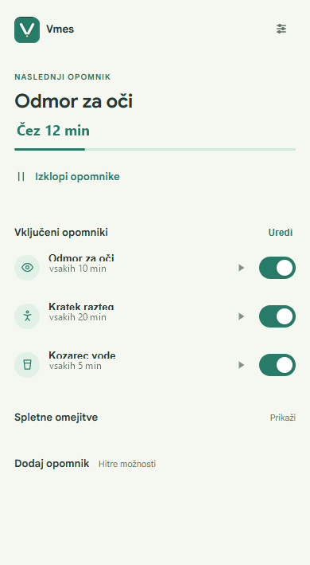
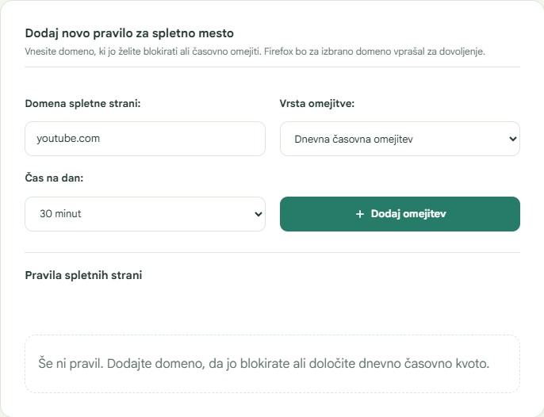

Namesti iz Mozille
Na strani dodatka izberi Dodaj v Firefox za namestitev podpisane izdaje.
DODATEK ZA FIREFOX
Odmori za oči, vodo in gibanje. Omejitve za splet po tvoji meri.
TUDI BREZ DODATKA
Vse tri vaje lahko odpreš tudi brez dodatka.
POGLED V VMES
Posnetka prikazujeta dejanski vmesnik dodatka; podatki na slikah so primeri.


NAMESTITEV
Priporočena je namestitev iz uradne Mozilline zbirke dodatkov.
Na strani dodatka izberi Dodaj v Firefox za namestitev podpisane izdaje.
V Firefoxovem pozivu preglej zahtevana dovoljenja in klikni Dodaj v Firefox.
V uvodnem koraku izberi opomnike. Pozneje jih lahko spremeniš v nastavitvah dodatka.
Firefox za Android: dodatek namesti iz Mozilla Add-ons, nato ga poišči v meniju Firefoxa pod Dodatki. Opomniki delujejo v Firefoxu — ni treba odpirati spletne strani Vmes.
FUNKCIJE
Opomnike in omejitve nastavi ločeno.
Nastavi ponavljanje v izbranih časovnih razmikih ali ob določeni uri in izberi aktivne dni. Opomnik lahko preložiš ali zaženeš ročno.
Spremljaj aktivni čas na izbrani domeni, nastavi dnevno kvoto ali blokado, ko želiš zaključiti z obiskovanjem strani.
Uporabi sistemsko obvestilo, prikaz na spletni strani ali ločeno okno. Izberi en način ali jih kombiniraj.
Predvajaj kratke lokalne zvočne opomnike. Glasnost prilagodi ali zvok izklopi; vzorci se ne prenašajo z omrežja.
Oglej si zgodovino opomnikov, opravljenih nalog in aktivnega časa, shranjeno v svojem Firefoxu.
Vaje s prikazi in časovnikom za premikanje pogleda ter ostrenje na blizu in daleč.
Kratke vodene vaje za vrat, ramena, zgornji del telesa in noge ter vaja za umirjeno dihanje.
OPOMNIK NA TVOJ NAČIN
Za prikaz opomnika na spletni strani Firefox zahteva dovoljenje za izbrane domene.
Prikažeta ga Firefox in operacijski sistem; lahko ga opaziš tudi med delom v drugem programu.
Opomnik se prikaže na spletni strani, ki jo uporabljaš, če za to dovoliš dostop.
Opomnik se odpre v svojem oknu Firefoxa, katerega videz je odvisen od teme brskalnika.
ZASEBNOST
Opomniki, omejitve, nastavitve in statistika se hranijo v lokalnem profilu. Vmes ne uporablja računa ali analitike in ne pošilja zgodovine brskanja na zunanji strežnik.
ODPRTA KODA
Koda dodatka je javno dostopna na GitHubu.